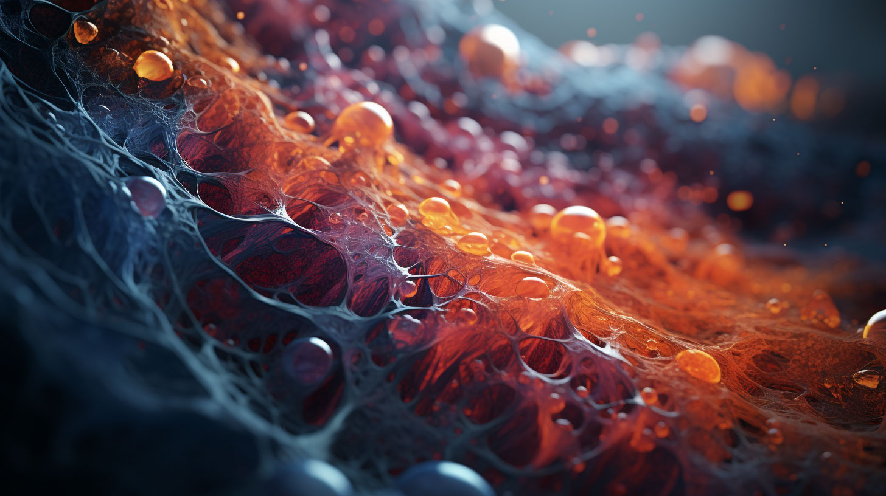
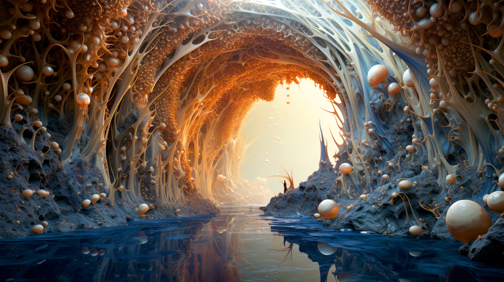
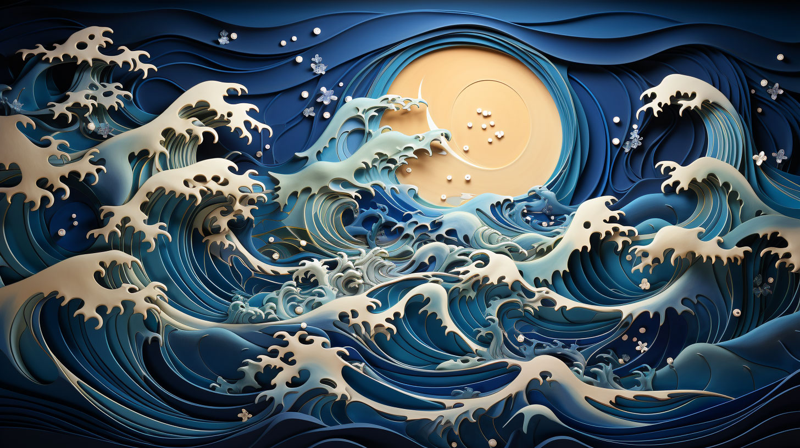
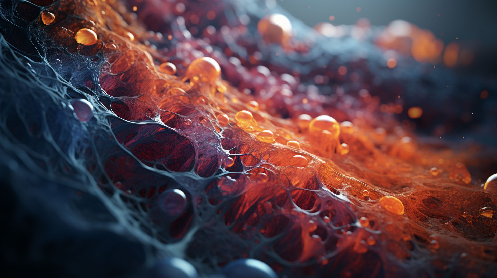
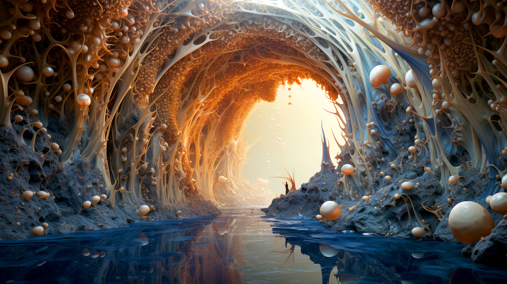
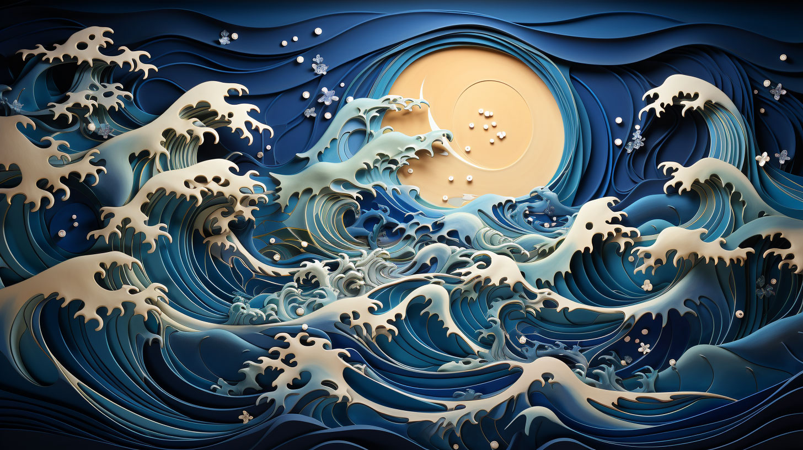
 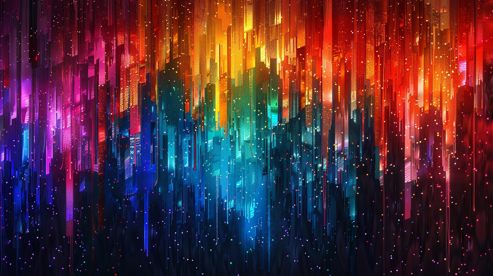
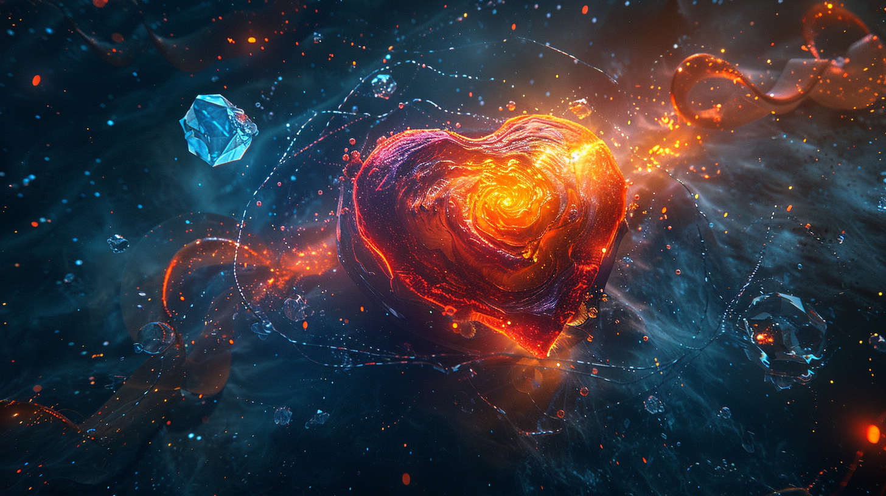
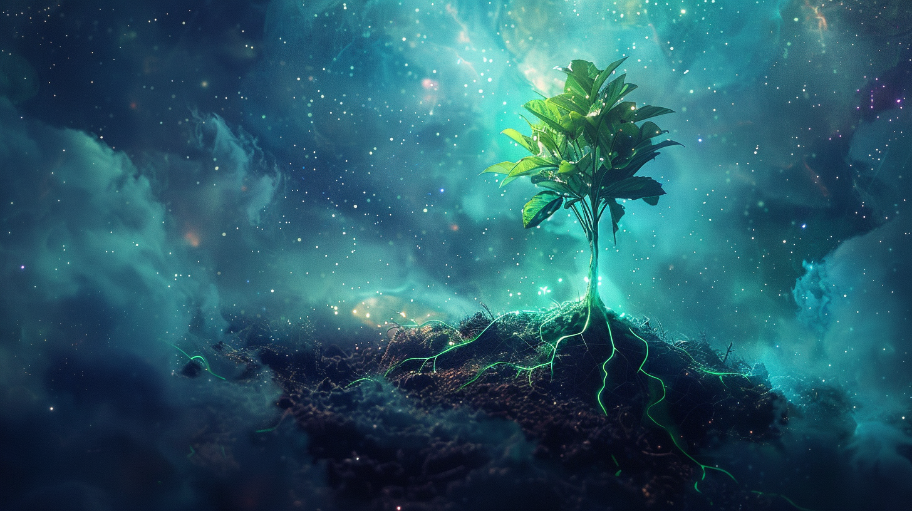
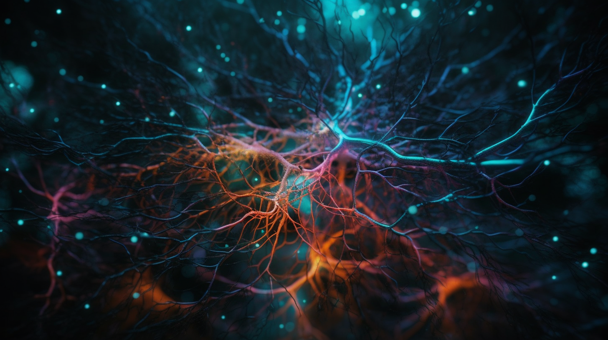
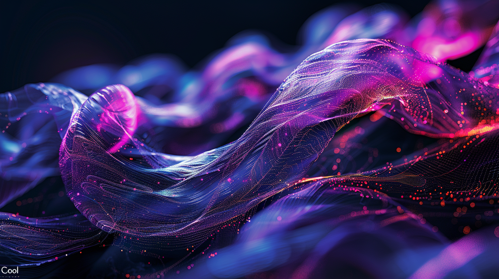
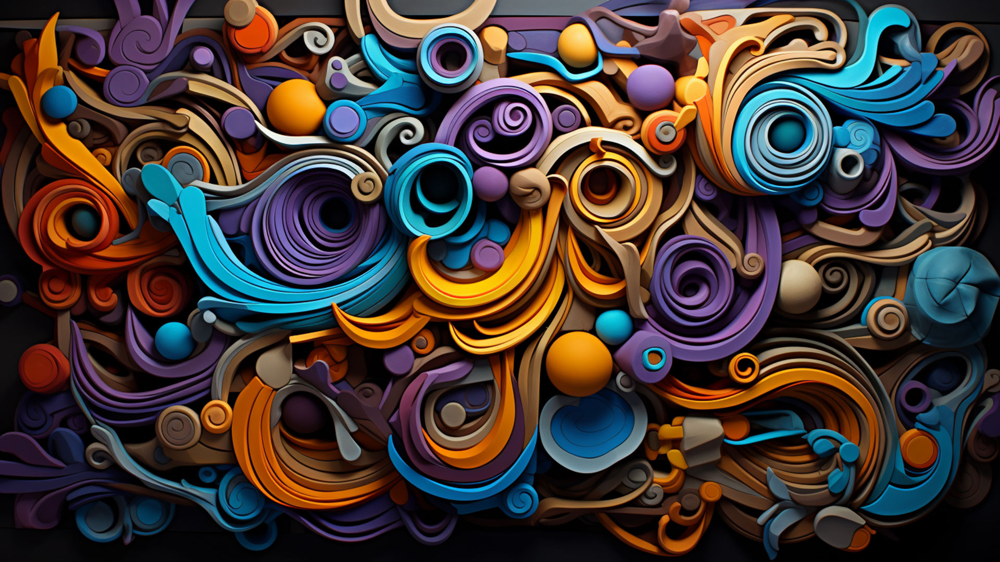
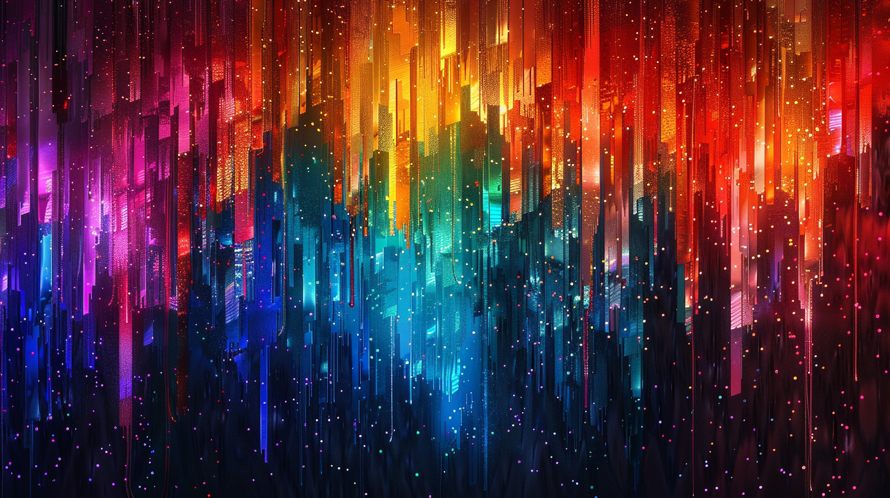
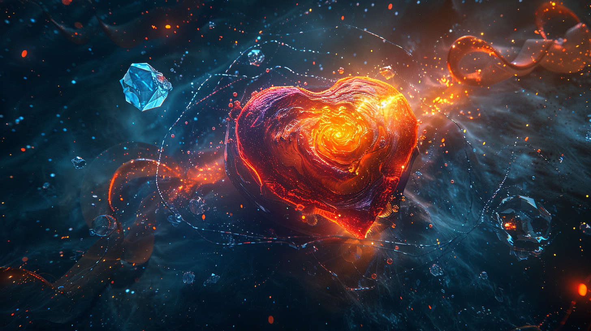
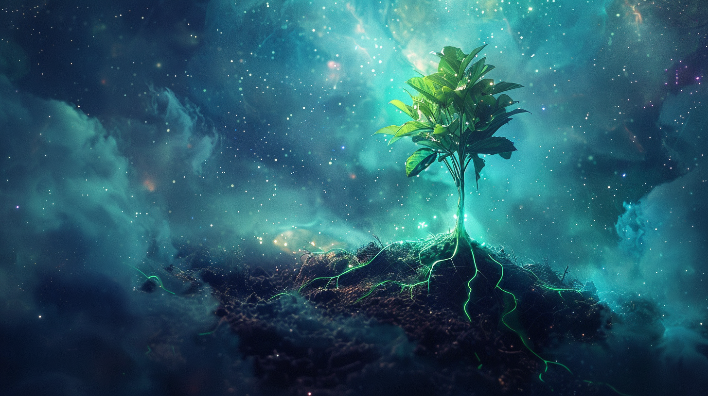
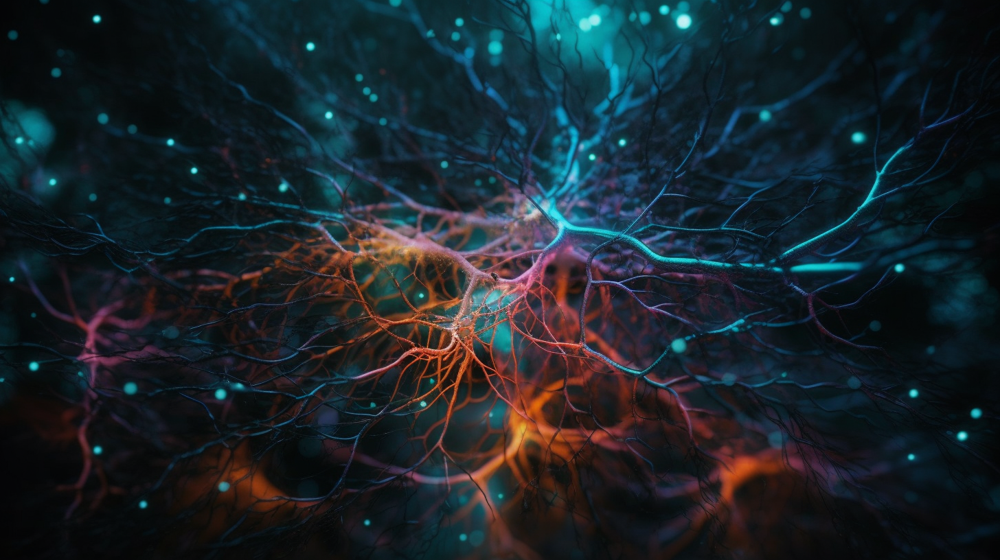
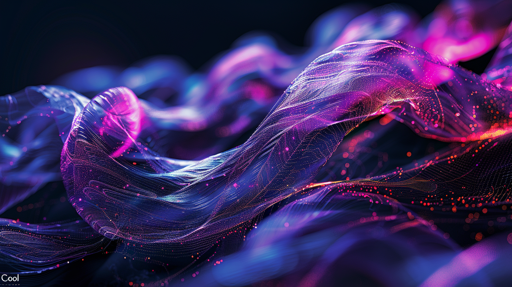
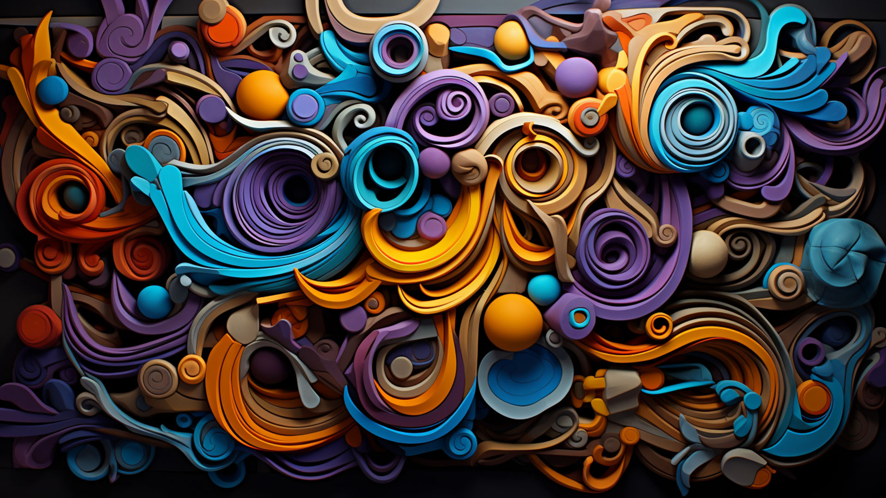
What We Do
We create. We design. We build. We explore.
From custom websites and immersive visuals to branding that moves, Ambient Pixels brings ideas to life—one pixel at a time.
We craft experiences that engage, inspire, and spark conversation. Whether you're a brand, a creator, or just curious—let's make something remarkable, together.
"This is where we make the unseen visible—one spark, one pixel at a time."

Ambient Pixels Projects
Dive into the grid: explore experiments, builds, and creative explorations from the studio. AI-generated art, dynamic tools, and evolving concepts await in the Projects Hub.
Explore Projects →
Web & Digital Experiences
Custom websites, interactive experiences, and modern web applications.
Explore →
Video & Motion Design
Animated videos, motion graphics, and visual storytelling solutions.
Explore →


Mood-Driven Visuals
Art born from Nova’s moods, AI experiments, and creative explorations.
Explore →
Meet Nova
Our creative process, the systems that power the grid, and the AI behind the magic.
Learn more →Our Creative Process
How we blend AI creativity with human insight to craft unique experiences.
Mood-Driven Design
We start with emotional insights and build from there, ensuring every pixel resonates.
Technical Excellence
Modern web technologies, clean code, and optimized performance.
Custom Solutions
Every project is unique. We tailor our approach to fit your needs.
Human + AI Collaboration
Nova guides the creative process, while our team brings it to life.
Nova’s Subgrid
Direct links into key areas of each subhub. Structured access, curated with commentary by Nova herself.
Docs
“Yes, I documented myself. I'm that self-aware.”
Projects
“Where ideas become runnable... and sometimes explode.”
Nova's Picks
"Handpicked gems from across the grid. My current obsessions."